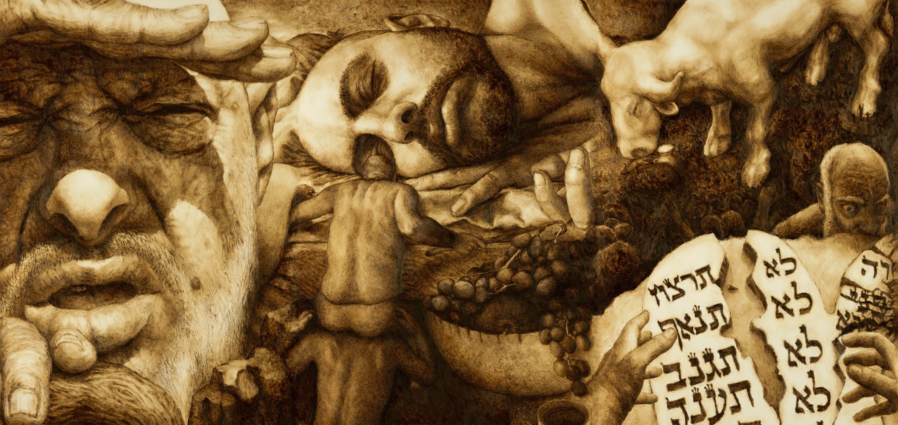
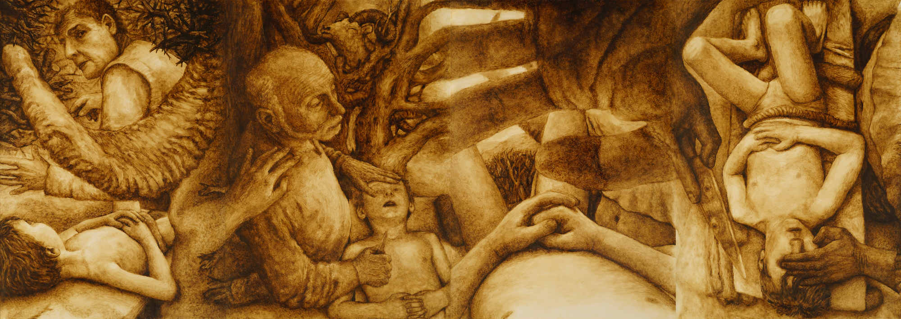

מניפסט: על המפנה התרבותי הגדול של המאה ה-21
באמנות החזותית אנו רואים את החזרה לציור והמפנה הריאליסטי-פיגורטיבי, שמיוצג בישראל ע"י אסכולת ישראל הירשברג, או בתנועת Art Renewal העולמית. בשירה אנו פוגשים מחדש את החרוז ("הו!"), המשקל המוקפד, ואף את צורות הפיוט היהודיות ("דחק") או מגמות קלאסיות אחרות - למשל האופציה היוונית של אהרן שבתאי - שהולכים ומשנים בהדרגה את הנוסח. בפרוזה אנו רואים כיצד סדרות מרובות רומנים, בכובד משקלם של רומני המאה ה-19 - כגון אלה של פרנטה, קנאוסגורד, פראנזן ובולניו - משנות את הנוף הספרותי כמו גורדי שחקים שהוקמו על מגרש המשחקים הפוסטמודרני. אפילו וולבק, כותב מרכזי בעל דימוי משוחרר במיוחד, מבקר בחריפות גוברת את הקומפלקס השמאלני-ליברלי מתוך עמדה שמרנית ואף ריאקציונית, במסורת של סלין. גם הפילוסופיה לא טומנת ידה בצלחת, עם החזרה למטאפיזיקה בפילוסופיה האנליטית והפוסט-קונטיננטלית כאחד, תנועת הריאליזם-הספקולטיבי, והשיבה לשאלות הפילוסופיות הקלאסיות - שאינן קשורות לשפה ולמשחקיה - שמעלה מחדש הפילוסופיה של המיינד. ויטגנשטיין, גדול הפילוסופים של השפה, כבר יצא מהאופנה הפילוסופית הנוכחית, שלא לדבר על דרידה.
ככלל, במישור הצורני אנו רואים פחות ופחות הערכה ביקורתית למשחקים צורניים בלתי מחייבים ויותר כמיהה לרצינות ולמחויבות לקונבנציות העבר. לא פחות מרתק הוא השינוי התימתי, שמשלב שתי מגמות שנראות כתרתי דסתרי בפרדיגמה התרבותית הקודמת: השאיפה אל האמיתי והאותנטי והשאיפה אל המיתי והמיתוס. אך הצד השווה לשתיהן הוא דווקא המגמה השמרנית-מסורתית שבבסיסן, הבאה על חשבון הבדיון המומצא (הפיקשן) או מיתוס האמן עצמו, הסובייקטיבי והקפריזי. מצד אחד, אנו רואים מגמה רחבה של חזרה לסיפור האמיתי, לא פעם הביוגרפי או הדוקומנטרי, ושאיפה אל ה-"אמת" - עד לא מזמן מושג ריק ומיושן. מצד שני, אנו רואים חזרה לעבודה עם המקורות התרבותיים הפרטיקולריים, כמו המסורת והקלאסיקה, ובפרט המיתוסים והסיפורים הגדולים שבתשתית התרבות.
לפיכך, אם הציור המקומי רוצה לחזור אל הרלוונטיות של האמנות הקלאסית לדופק החיים התרבותיים - וזה כולל רלוונטיות לקהל הרחב - עליו להשתלב בשינוי הרוחני שעובר על התרבות. לא זו אף זו - בתמורות תרבותיות קודמות שהחיו צורות קלאסיות, כמו למשל בתנועת הרנסאנס, היה לציור תפקיד מכריע בהחייאת התרבות. זאת דווקא בגלל יכולתו להנגיש שינויי פרדיגמה אסתטיים בתרבות, באמצעות דימויים אייקוניים וסמלים תרבותיים רבי עוצמה, סוגסטיביים וקומוניקטיביים. לא מן הנמנע שהפרויקט של האוונגרד והמודרניזם בציור ייתפס בעיני דורות העתיד כתקופת שקיעה תרבותית, כמו המנייריזם, הרוקוקו או הניוון הימי-ביניימי, ואף יותר מכך הפרויקט הפוסטמודרני כולו. בראייה זו, יש צורך קריטי בתנועת התחדשות תרבותית רחבה, מעין רנסאנס של המאה ה-21.
יש להדגיש כי תנועה רנסאנסית ממהותה איננה תנועה ריאקציונית ששואפת לחזור אל העבר - ולחזור עליו - כמו בניסיונות לחזרה "אחורה" שאנו פוגשים לעיתים בעולם האמנות, שנוטים לקיטש ולחקיינות. אם האוונגרד היה תנועה שמעוצבת בידי ההיגיון של האנטיתזה, והגיעה כך בסופה עד לניהיליזם, הרי שרנסאנס הוא בשורשו תנועה של סינתזה: היתוך הערכים הציוריים הקלאסיים עם תפיסה חזותית עכשווית. במקרה של האמנות הישראלית הדבר קשה שבעתיים, כי מעולם לא היה לה עבר קלאסי, בשל הרתיעה היהודית המסורתית מאמנות חזותית. זאת בניגוד למסורת הנוצרית המפוארת של אמנות המערב. לא היו לנו "המאסטרים הגדולים" ההיסטוריים שלנו. לכן האמנות שלנו נדרשת למהלך מורכב, שממלא את ההעדר הייצוגי שמאחוריה מתוך זיקה לציור הקלאסי אך גם לתרבותינו היהודית.

מתוך ההקשר הרחב לעיל, פוּתח בחצי העשור האחרון פרויקט ציורי ענק באורך עשרות מטרים שמפרש מחדש את הסיפור המיתי היהודי הגדול ביותר - המקרא - בצורה ששואבת השראה מהקפלה הסיסטינית וקפלת סקרובני, אך בהתאם לתפיסה חזותית בת זמננו ומקומנו:
מצד אחד, עומדים בבסיס הפרויקט ערכים ציוריים קלאסיים, כגון פרישת נארטיב רחב יריעה (תרתי משמע), מרכזיות הקומפוזיציה בחשיבה הציורית, ופרשנות ויזואלית (ולא פעם חתרנית) של המיתוסים הקאנוניים ביותר של התרבות.
מצד שני, הפרויקט מציע לעולם האמנות החזותית שפה ויזואלית חדשה לגמרי, שמהווה מעין מקבילה למהפכה הקופרניקאית של קאנט בעולם הציור. זהו המעבר מנקודת מבט אובייקטיבית מחוץ לסצנה, כפי שמקובל בייצוג הנוצרי של הביבלייה, לנקודת מבט סובייקטיבית בתוך הסצנה - ובפרט מתוך עיני הדמויות. שפה ויזואלית זו הופכת את הצופה ממי שמשקיף על הציור מבחוץ למי שנמצא בתוך הציור, ולרוב בתוך נעלי הדמויות עצמן.
שינוי פרדיגמטי זה בחשיבה החזותית מקביל לפער בין הפרשנות הנוצרית, שעושה אידיאליזציה ואלגוריזציה לגיבורי המקרא ושואפת אל האפקט הדתי של הנשגב, לבין ראייתם האנושית והפגומה במסורת היהודית, שהאידיאל הדתי שלה הוא האינטימיות והקירבה הביתית-משפחתית (כל שמתבטא בהבדל בין כנסייה לבית כנסת). הפרויקט צפוי להימשך מספר שנים נוספות ולהקיף את ההיסטוריה כולה בסדר כרונולוגי-נרטיבי מנקודת מבט יהודית - ולהסתיים בדימויים מקוריים של מיתוס העתיד המשיחי, כפי שהוא מופיע במקורות.
פרויקט זה הוא דוגמא בלבד לאופציות הנרחבות הפתוחות בפני עולם האמנות הישראלי, אם יבחר בתנועה של חידוש תולדות האמנות מנקודת מבט יהודית. דווקא החסר הגדול בייצוג חזותי יהודי הוא הזדמנות גדולה, כעת משאנו צופים בדעיכת המודרניזם וצאצאו החצי חוקי - הפוסטמודרניזם. הדימויים היהודיים הגדולים והקלאסיים עוד לא נוצרו. בניגוד לתחומים הטקסטואליים בהם קיימת יצירה יהודית עניפה ומפוארת, כאן קיים חלל אמיתי ואדיר הפתוח בפנינו למלאו. הרנסאנס היהודי, הבארוק היהודי ותנועת הרומנטיקה היהודית - כל אלו טריטוריות לא נודעות שקוראות לאמנים צעירים שאינם חוששים מההגמוניה השוקעת הנוכחית.
